더인 교육 4일차
1. 들어가며
- 수학공식처럼 반도체를 접근하지 말아라, A+B=C 이다 이런식으로 접근하지 말아라. 이제는 면접관을 말로 설득할 수 있어야 하는데 공식만 가지고 설득할 수 없다.
- 그러면 어떻게 공부해야하는가? Keyword 중심으로 정리하되 교재의 문어체가 아니라 말하듯이 설명할 수 있게 정리노트를 말들어라!
- 단편적인 지식만 공부하는게 아니다. 인과관계, 상관관계를 공부해야한다.
- 면접관이 반도체 스터디는 해봤는지 물어본다. 지금 준비하는게 나중에 면접 때 가서 할 얘기이다.
- 신소재 중에서도 반도체 Track을 탔던 사람은 소자도 조금 Depth 있게 준비해야한다.
어떻게 공부해야하는가?
(1) Keyword - 문장으로 정리 (정리노트 제작)
(2) 정리한 것을 말하는 훈련
2. 실제 훈련)
Q. 반도체의 정의를 다음 세 가지 키워드 중에 하나 잡고 설명하시오
1. Conductivity (전기전도도)
예시 답변) 반도체는 도체와 부도체의 중간 성질을 갖습니다. Conductivity가 control이 가능한 것을 반도체라고 합니다. 이 때 Conductivity는 Resistivity와 Trade-off 관계에 있습니다.
→ 이 때 전기전도도가 control이 가능하다고 얘기하지만, 전기전도도는 비저항과 역수 관계로 물질의 교유한 값이다. 순간 착각해서 control이 가능하다는 말에 속았다. 그러면 control이 안되면 전기전도도 자체를 변화시키는게 아닌건가?
Q. 그러면 전기전도도 자체가 변화되는게 아니라 도핑을 해서 전하 캐리어가 늘어나는 것인가?
A. Claude한테 물어봤을 때는 전기전도도는 변할 수 있는 값이라고 한다. 그러면 강사님은 무슨 목적으로 전기전도도가 변할 수 없는 값이라고 한거야?
2. Resistivity (비저항)
예시 답변) 비저항은 물질의 고유한 특성으로 길이에 비례, 단면적에 반비례하는 저항값을 가지게 됩니다. Si 기준으로 10⁻³~10³ Ω·cm 값을 가집니다.
*착각하면 안되는 것: 비저항은 물질의 고유한 값이나 도핑 정도에 따라서 비저항이 달라질 수 있음.
3. Energy Band gap
예시 답변) Energy band gap은 valence band와 conduction band 사이에 Energy level이 존재하지 않는 구역을 말합니다.
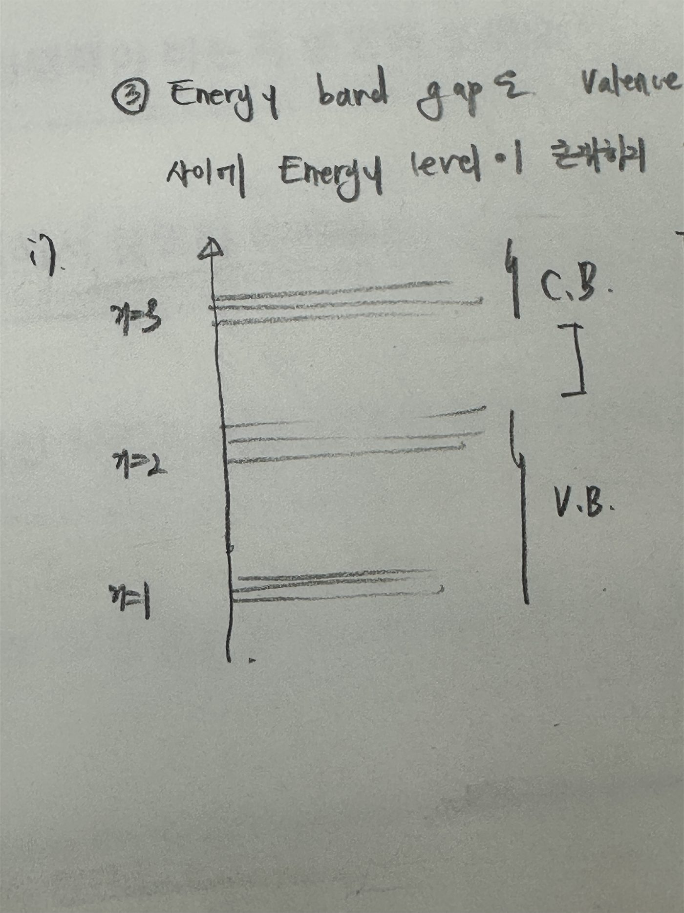
그래서 Si는 1.12 eV의 Ge 0.67eV의 Bandgap을 가지는 대표적 반도체 물질입니다.
좋지 않은 답변) Energy band gap에서 에너지 준위 자체에 매몰되어서 정확히 Energy band gap이 무엇인지 설명하지 못하고 있으면 안된다.
→ 강사님이 설명해주실 때 왜 보어 모델인가? 라는 질문에 주기율표를 가장 잘 설명할 수 있는 것이 보어 모델이기 때문이라고 답하셨다. 확실히 이런건 중학교 수준이고, 내가 빌렸던 책을 알아야하는 이유를 뒷받침하는 것 같다.
3. 실제 훈련) 우문 현답형 질문 (질문 자체는 어리석으나 답은 똑똑하게)
Q. 반도체의 종류가 몇 가지인가요?
1. 사용 용도에 따라 분류하면 Memory 반도체와 non-Memory 반도체로 분류됩니다.
2. 구성 성분으로 분류하면 Elementals, Compounds, Alloy로 이루어져 있습니다.
Elements(원소 반도체)는 다시 Intrinsics(진성 반도체)와 Extrinsics(불순물 반도체)로 구분됩니다. 진성 반도체에는 Si, Ge로 분류됩니다. 불순물 반도체는 P-type과 N-type으로 분류됩니다.
Compounds(화합물 반도체)에는 GaAs, GaP, GaN 등이 있습니다.
Alloy(합금 반도체)에는 Si-Ge가 있습니다.
대상: “Compounds(화합물 반도체)에는 GaAs, GaP, GaN 등이 있습니다.”
강사님은 이걸 혼합물 반도체라고 했다. 화학쪽이 아니신가본데? 화합물은 화학적인 결합을 이루고 있는 것이다. 혼합물은 물리적으로 섞여 있는 것이다.
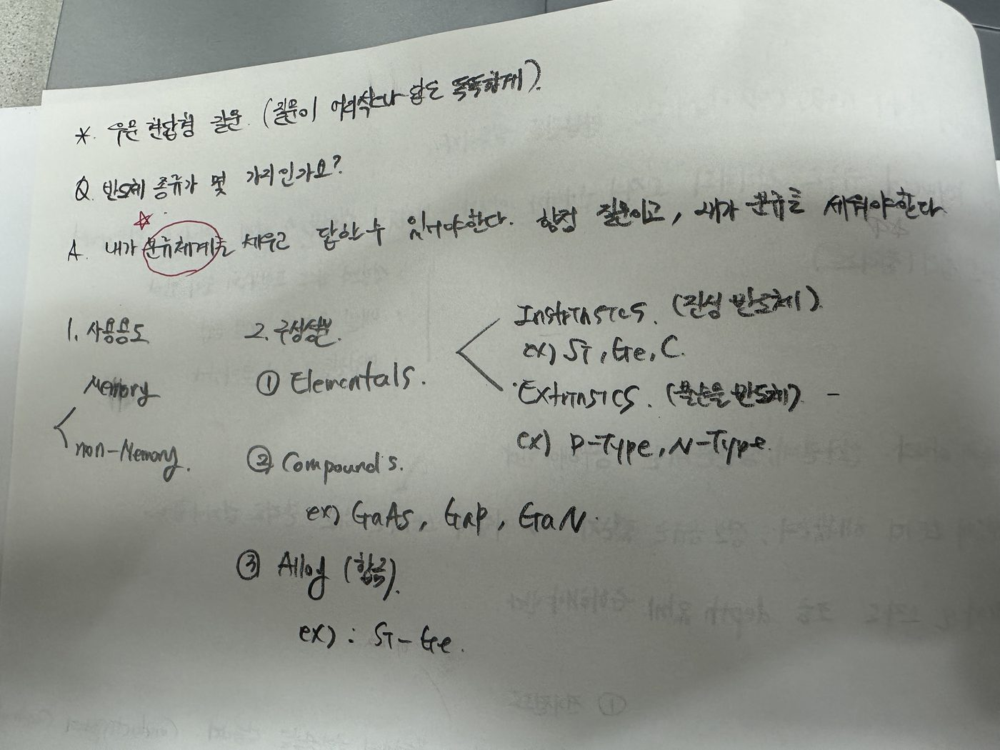
실제로 면접 때 이런 질문이 들어오면 분류체계를 너 방식대로 정하고, 각각에 따라서 설명하면 된다. 실제 수업 시간에 시켰을 때 머릿속에서 “이걸 물어본 의도가 뭐지? 함정이 있는건가?” 라는 생각부터 들었다. 근데 사실은 그게 아니라 우문현답 느낌으로다가 “너가 알아서 분류해서 설명해봐” 이런 느낌인거지. 솔직히 조금 짜증나지만 어쩌겠어. 그래도 방법을 알려주시긴 하잖아? 언짢고 짜증나도 이렇게 해야 또 임팩트가 커서 잘 외워지지. 하하 ^^
아 그리고 외인성 반도체는 참고로 불순물 반도체의 일본말이란다. 이것도 살짝 꼽 하하^^
4. 건물 1~30층 짓기
- 항상 연습할 때는 발음을 전부 말로 해가면서 연습해라
1. Metal
- 전류가 흐르면 Metal을 사용합니다.
대상: “전류가 흐르면 Metal을 사용합니다.”
전기가 흐른다는 말은 애매한 말입니다. 전류가 흐르는 것입니다.
전기: 전하, 전기장, 전압, 전류, 전기에너지 등을 포괄하는 넓은 개념입니다. 따라서 무엇이 흐른다는 것인지 명확하지 않습니다.
전류: 단위시간 동안 도체의 단면을 통과하는 전하량을 뜻합니다. 즉, 전하의 이동을 수치로 나타낸 것입니다.
2. Dielectric
- 절연체로는 다음 두가지를 사용합니다. SiO₂ (Oxide), Si₃N₄ (Nitride)
3. Impurity
- 지하를 지을 때 실리콘 아래에 Metal과 Si가 있으면 Contact 저항이 생기더라. 그래서 Impurity가 필요해졌다.
- 이때는 Dielectric으로 Oxide와 Nitride를 모두 사용해도 된다.
Q. Nitride film은 Si(웨이퍼)와 평행하게 증착하지 않는다.
A. Nitride film은 Si wafer와의 열팽창계수 차이로 인해 Wafer를 휘어지게 하는 thermal stress가 발생합니다. 따라서 사용하지 않습니다.
그렇지만 1~30층까지 다 짓고 난 다음에는 Passivation을 할 때 Si₃N₄를 사용할 수 있다.
<Nitride의 사용 용도>
1. Conventional (과거에는)
- LOCOS 에서 확산 방지막으로 쓰였습니다.
- Si₃N₄는 사용하고 나서 없앤다. 남아있는 것은 Passivation을 사용할때만!
2. Modification (현재에는)
- STI에서 1) Hard Mask로 사용합니다. 2) CMP Stopping Layer로 사용합니다.
- 이 과정들을 끝내고서도 웨이퍼에 남아있지 않는다. 반복하지만 Passivation 에서만 Si₃N₄를 남겨둔다!
Q. 1~30층을 짓는다고 할때
A. 지상층에는 Metal, Dielectric 이 있어야합니다. 지하층에는 Dielectric과 Impurity가 있습니다. 지상에서는 Dielectric에 passivation을 제외하고는 SiO₂를 사용합니다. 지하에서는 Si₃N₄를 사용해도 상관 없습니다.
5. 반도체 공정의 변천사
1. Conventional (1970~1990 중반) - “과거에는”
- 소재가 안바뀐다.
- 제조 공정이 바뀐다. (?)
- 무어의 법칙(2년동안 집적도 2배)을 준수했다. → 그래서 가로,세로 1씩이다가 0.7으로 줄여져야 면적으로 따지면 0.49가 된다. 그래서 선폭은 70%감소이다.
그래서 선폭은 100→70→49 … 이렇게 선폭이 30%씩 줄어들었다.
2. Modification (1990년 중반~) - “현재에는”
- modification에서는 소재가 바뀌고, 제조 공정이 바뀌었다.
- 이때는 Al에서 Cu로 바뀌었다. 2002년을 기준으로 바뀌었다고 한다. (소재가 변함)
- Dielectric - Low-K, High-K (소재가 변함)
- ALD (제조공정 변함)
6. Dielectric (유전체)
- Di(Two) 전기적인 극성이 두 가지임을 시사한다.
- 정의: 전하를 유기하는 물질
1. 유전체의 성립조건
(1) 전기쌍극자를 포함하는 물질 (+ -)
(2) 외부 전기장에 의해서 Polarization(분극)이 발생된다.
- 분극이 되었을 때 (- +) (- +) 로 만나게 되면 ( -_ _+) 된 것처럼 보인다.
- (+) ( -_ _+) (-) 가 있다고 할 때 좌측의 -와 우측의 + 는 구속 전하라고 한다.
2. 유전체의 역할
(1) Insulator 역할 (절연체)
- 절연체 자체는 절연하는 특성이기 때문에 절연을 많이한다? 적게한다? 는 있을 수 없는 말이다. → 다른 교재에서는 이렇게 오개념이 서술되어있다!
(2) 전하를 유기(아마 저장?)하는 역할
헷갈렸던 Point) Oxide에서 사고가 났다? 근데 이 Oxide가 사고가 났다고 하면 1층? 2층? 구분이 안된다.
- 그래서 BPSG, TEOS, TiO₂, Isolation, HDPCVD, ILD, IMD 1,2,3, …. 이런 얘기들이 나오기 시작한 것임
Dielectric Constant (k)
- 과거에는 SiO₂와 Si₃N₄ 밖에 없었다. SiO₂: 3.9, Si₃N₄: 7.0
- 실리콘 위에 SiO₂만 증착했으니까 k를 Low, High 구분하는 기준이 된 것이다.
(1) High k ( >3.9 eV)
- 분극이 잘 일어난다. 전하 유기를 많이 한다.
(2) Low k (<3.9eV)
- 분극이 잘 일어나지 않음. 전하 유기를 적게 한다.
Modification 된 공정에서 왜 Low-k, High-k를 사용하는가?
- High k를 사용해서 Capacitance를 올리고자 한다. → Conventional 할때보다 capcitance의 절연체와 MOS에서 Oxide의 Capacitance가 커져야 하는 상황이다.
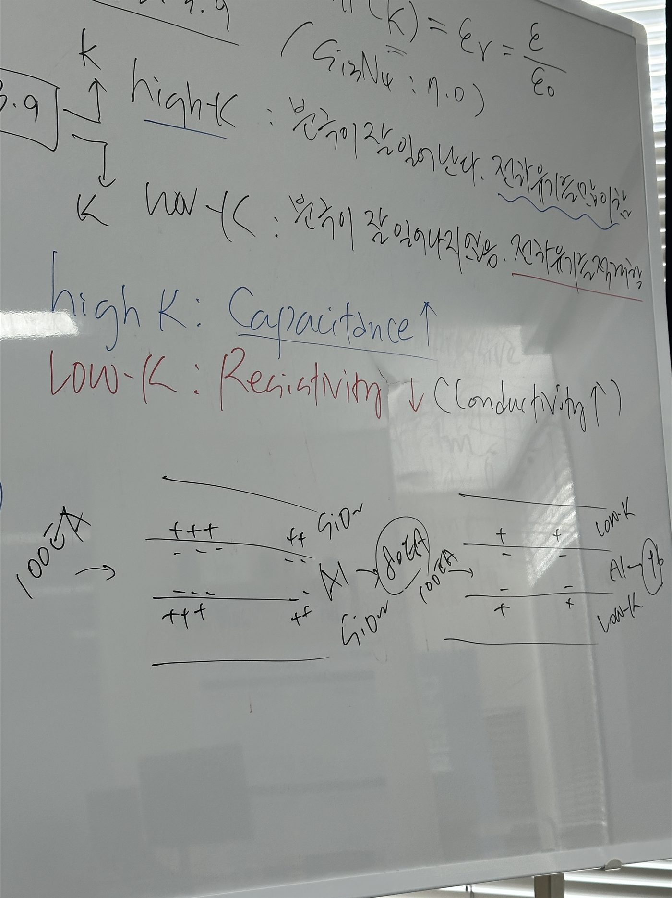
- 결국 Low K 물질을 사용하는 전하가 덜 잡히기 때문에(전하 유기가 덜 일어나기 때문에) 전류가 잘 흐르게 된다. 즉 전기전도도가 좋아진다.
<이 부분이 절대 이해가 안가는데?>
유전상수가 커지거나 작아져도 금속 자체의 전기전도도는 변하지 않습니다. 유전상수가 크면 기생용량이 커져 전압을 바꿀 때 더 많은 전하를 옮겨야 하므로 충·방전 전류가 더 오래 흐르고 신호가 느려지며, 유전상수가 작으면 그 반대입니다. 다만 일정한 직류전압이 걸린 정상상태의 전류는 금속 저항으로 결정되므로 유전상수와 관계없이 동일합니다.
전류의 시간적 흐름은 달라질 수 있지만 금속의 비저항과 전기전도도는 그대로
내 생각에도 이게 전류의 흐름 자체가 변하는게 아니라 전류의 흐름이 더 천천히 혹은 빠르게 변할수는 있어도 전류 그러니까 전자의 흐름이 바뀐다, 전기전도도가 바뀐다고는 말할 수 없는거 아닌가?
대상: “결국 Low K 물질을 사용하는 전하가 덜 잡히기 때문에(전하 유기가 덜 일어나기 때문에) 전류가 잘 흐…”
이해가 안돼 이해가 안돼 이해가 안돼 261105
Q. Capacitance 공식에 대해 설명하고, Capacitance를 늘리기 위해서는 어떻게 해야하는지 설명하시오.
A. 정전용량(Capacitance)은 전압을 가했을 때 전하를 저장할 수 있는 능력이며, 다음과 같이 정의된다.
C = QV
여기서 C는 정전용량[F], Q는 저장된 전하량[C], V는 두 전극 사이의 전위차[V]이다.
평행판 커패시터에서 가장자리 효과를 무시하면 정전용량은 다음과 같다.
C = εAd = ε0εrAd
- ε0: 진공의 유전율
- εr: 전극 사이 유전체의 상대유전율
- A: 두 전극이 마주 보는 면적
- d: 두 전극 사이의 거리, 즉 유전체의 두께
따라서 정전용량을 늘리려면 상대유전율이 높은 유전체를 사용하거나, 전극이 마주 보는 면적을 넓히거나, 전극 사이의 거리를 줄여야 한다. 다만 유전체를 지나치게 얇게 만들면 누설전류와 절연파괴가 발생할 수 있으므로 이를 고려해야 한다.
7. [오후 시간]
들어가며
해외 기업 → 기술 테크니션 → 해외 영업(한 기업과 신뢰관계) → 사업
- 웨이퍼 업체: 신에츠공업화학: 40%, SUMCO: 25%, SK 실트론: 18%
- 외국계 기업으로 가라는 이유는 팀원, 매니저 자리까지 갈 수 있고, 프로젝트 성공하면 임원이 될 수 있다. 큰 대기업보다는 편견이 적다
- 패키징 회사는 패키징만 한다. HBM도 패키징하면 삼성이랑 SK하이닉스만 필요한 상태. 후공정 기업에서 경력 쌓고 이직이 어렵다?
→ 어떻게 해도 설득이 안된다. 하기 싫었다라고 밖에 설명이 안된다.
- 장비사에 들어가서 이직하는 것 자체는 가능한데 공정 냄새가 나면 뽑지 않는다.
- TEL 은 정년이 없고, 팔이 안으로 굽는 회사. 사업안하고 조용히 회사만 다닐 것이라면 괜찮은 선택
- 반도체산업협회 또 얘기하신다.
- 갑자기 들어가는 회사는 의미가 없다. 내가 목표하는 길을 가기 위해 이 회사를 지원하는게 되어야 한다. 남들이 지원한다고 다 지원하는거 의미없다. (ex. Amk, 스태츠팹) 흠..
1~30층까지 필요한 것은 Oxide, Metal이다. 그래서 각각의 방법인 Oxidation과 Metalization을 배운다.
- 소재를 만들기 위한 방법을 배우는 것이다.
- Nitride는 웨이퍼에 평행하게 1~30층에 증착하지 않으니까 Nitidation이라는 용어를 사용하지 않는 것이다.
- 그래서 결론은 Oxidation과 Metallization이 8대 공정이라고 말하는게 아니다.
대상: “그래서 결론은 Oxidation과 Metallization이 8대 공정이라고 말하는게 아니다.”
그러면 8대 공정에 들어가는데 8대 공정이라고 말하지 않는다는거야? 뭔 말인지는 알겠는데 우리가 이걸 어떻게 아냐고 그렇게 가르치잖아? ^^
8. 반도체 8대 공정
Q. 반도체 8대 공정이 무엇인가요?
A. Si Wafer 위에 원하는 chip을 제조하기 위한 8가지 공정
- 반도체 8대 공정은 반도체 자체가 어떻게 만들어지는지 모르는 사람들 위해 설명하려고 생긴 말이다. 하지만 실제로 삼성, 하이닉스가 처음부터 하는 것은 아니니까.
→ Wafer를 만드는 공정, Packging 공정
(1) Photo 공정
PR Mask 형성 Mask 의 용도는 Protection과 Prevent이다. Photo 공정이 끝나면 Mask의 역할은 다 한 것이다.
i)최초(회로?) Pattern 형성
(2) Dry Etch
- 파내다, 식각하다
- 반도체는 건물과 다르게 채워서 올리는데 파냈으니까 채워야겠지?
Thin Film Deposition (이게 바로 채워넣는 공정 3가지이다)
(4) PVD
(5) CVD
(6) Diffusion
ii)Impurity 주입
(3) Ion Implantation
- 지하에 전기가 흐르는 것은 Impurity를 통해서 만든다. (그새 까먹고 Metal! 생각했음)
(7) CMP 공정
(8) WET clean
PR 제거 공정
Ashing (Dry Etch) + PR Strip (Wet Etch)
상식 바로 잡기
반도체에서 Wet과 Dry가 나오면 Chemical phase가 나온다.
- Liquid는 Wet을 붙이고, Gas-Vapor-Plasma는 Dry를 붙인다.
<Wafer 쪽>
(1) PR Mask
(2) Hard Mask
- 절연체(유전체) 사용하기 때문에 두 가지인 Oxide와 Nitride를 사용할 수 있다.
<Photo 쪽>
- 회로원판 (차광막)
B.D
평소에 말 잘하더라도 면접 상황 때 말하는 것은 다르다. 미친척 하고 중얼중얼 거리면서 말하는 연습해라.
9. 중간 정리: 단차와 CMP, 공정 Cycle
중간정리: 반도체에는 1~30층에 Metal과 Dielectric이 있어요. 지상에는 Metal과 Oxide만 존재합니다. 이때 Metal Oxdie가 존재하기 위해서는 Thin Film Deposition을 통해 형성합니다.
증착하고 나면 Step 단차가 생기게 된다. 그 단차는 um 단위 정도 된다. 그러고 나서 포토 공정을 진행하는데..
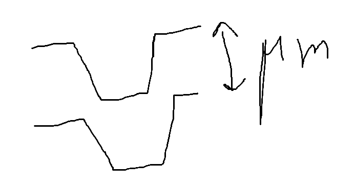
포토 공정은 이러한 Step difference가 마이크로미터 단위로 있는 상태에서는 진행할 수 없다. 그래서 CMP가 필요한 것이다. 이렇게해서 초점이 맞을 수 있게, DOF margin을 확보하기 위해서 CMP를 진행하는 것이지 모든 공정에서 진행하는게 아니다.
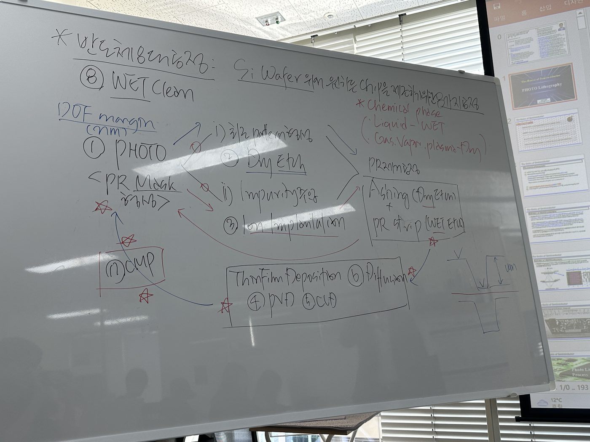
Photo하고 Dry Etch 사이와 Photo 하고 Ion Impantation 사이에는 별표가 안들어가 있다. Clean 공정이 들어가는지에 대한 설명임. 그리고 Photo는 보호하기 위한 mask인데 cleaning이 이 사이에서 진행하면 PR이 보호하는 역할을 해야하는데 PR 자체가 망가지니까 (damage를 입으니까)
실제 면접관님들이 “8대 공정에 대해서 설명하시오” 했을 때 이 질문에는 경계가 없기 때문에 최대한 말할 수 있어야한다. → 아까 반도체 대해서 물었던 것처럼
Q. Photo 공정을 왜 진행하나요?
A. 우리가 photo 공정을 진행하는 이유는 Dry etch와 Ion implantation을 진행하기 위해서입니다.
Q. Photo 공정에서 Development 가 제대로 되지 않으면(Under develop) 어떤 문제가 있나요?
A. PR Mask가 제대로 만들어지지 않아서 회로 Pattern을 형성하거나, Ion Implantation을 진행해서 Impurity를 주입할 수 없습니다.
Q. Dry Etch에서 Under Etch가 생기면 무슨 문제가 있나요?
A. 우리가 원하는 회로 pattern 형성을 할 수가 없습니다. 왜냐하면 우리가 원하는 회로(4,5,6번)를 증착할 수 없기 때문입니다.
여기서 배워가야 할 것
칠판에 적혀져 있는 Cycle을 천천히 짚어가며 어디에서 문제가 생겼는지 찾아낼 수 있어야 한다. 이게 공정기술 엔지니어의 역할이다. (이게 내가 생각하는 본질과 가까운 것 같다. 공정기술 엔지니어가 무엇인지 정확히 알아가자)
이건 지금 Conventional 한 시대에 대한 설명이다. 현재는 Modification 공정. 그래서 이전과 같은 상황이 아니다! 계속해서 좁아지니까
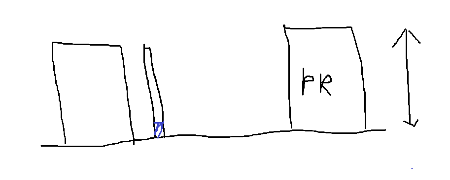
Q. Conventional 공정과 Modification 공정에 대해 차이를 설명하시오
A. PR의 두께가 충분했을 때는 Mask의 역할을 하면서 회로 패턴을 새기고 Impurity를 주입할 수 있었다. 하지만 너비가 줄어들게 되면서 A/R이 너무 커지게 되니, 높이를 낮춰야 했다. 하지만 그렇게 되면서 현재에는 더 이상 회로패턴을 형성하거나 Impurity를 주입하는데 사용할 수 없다. 그래서 이제는 1차 Hard Mask로 사용하게 되었다.
무슨 말이냐면 이제는 Scale이 작아지면서 PR의 너비가 줄어들게 된다.
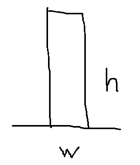
h/w로 나눈 값을 Aspect Ratio라고 하지? 근데 점차 Scale down이 되는 것은 너비(w)가 줄어든다는 얘기이고 그렇기 때문에 PR은 서있어서야 하는 입장인데, 다 쓰러지게 된다. A/R = h/w 에서 w가 줄어들면 h도 같이 줄여줘야 하는 상태이다. PR이 쓰러지는 것을 방지하기 위해서 h도 작아져야 한다는 것이지.
그래서 PR Mask를 만들어도 PR의 두께 자체가 얇기 때문에 회로 패턴 형성이나 Impurity 주입은 못하게 된다. 그래서 이제는 1차 Hard mask로의 역할을 하게 된다.
10. Photo 공정
대상: “Photo 공정”
261105(목) 여기서부터 복습 이어서 진행해야됨
Resolution: 구현해낼 수 있는 미세 선폭의 크기
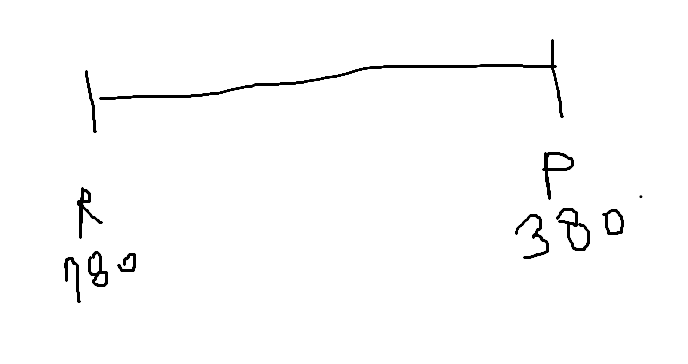
PR은 UV 에 반응하게 된다. 반도체에서 자외선 정의는 330-340nm 까지로 한다. 따라서 PR은 남색 정도만 되어도 간섭 반응이 일어나게 된다. 780~380nm 정도가 가시광선 영역임에도 불구하고 남색 정도 되는 파장 빛에서 간섭 현상이 일어날 수 있다. 그래서 빨간색은 사용하기 위해서 780nm 를 사용하면 좋겠지만 심리적인 이유 때문에 노란색을 쓰는 것이다.
면접의 태도
Q. EUV를 사용하지 않고서도 10nm 이하 선폭을 구현할 수 있는 방법을 설명하세요
A. 제가 10nm 이하 선폭을 구현하는 방법에 대해서 EUV 방식은 잘 모르겠습니다. 괜찮으시겠다면 EUV 방식에 대해서라도 설명드리고자 합니다.
→ 공부하겠습니다. 제가 실력이 부족해서 잘 모르는 것 같습니다. (X)
면접을 볼 때도 질문이 끝나면 대답하기. 잘 아는 것이라도. 잘 모르는 질문이 나오면 천천히 생각하고 할 수 있는 영역까지는 말하려고 노력하기. 이게 최소한의 태도
1. Snell’s Law
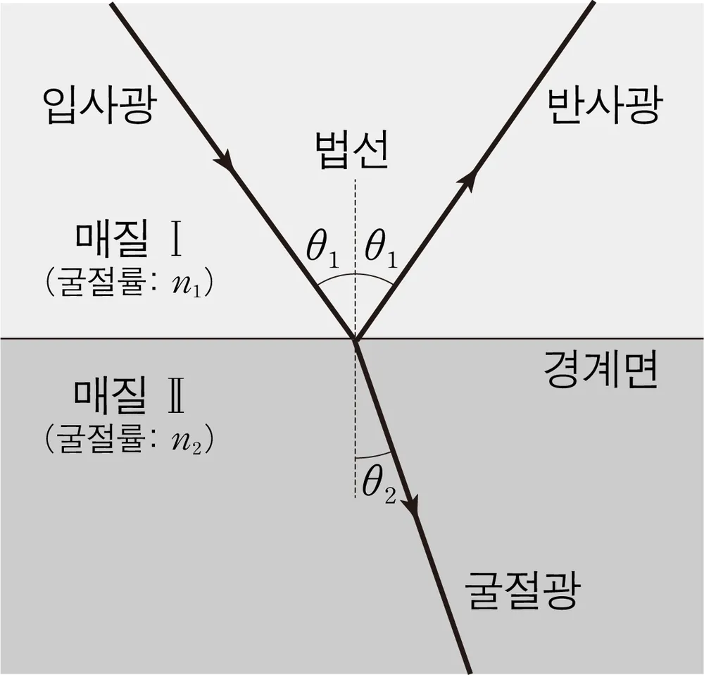
- Reflection Ray(반사광)가 Standing Wave의 원인
- 굴절상수가 공기는 1, 물은 1.33 → 굴절상수 차이로 인해 빛의 회절이 일어나는 (안으로 굽는) 현상을 이용하는 기술이 ArFi
- 굴절율이 더 큰 매질 쪽에서 각도가 더 작다
회절각
- 수직입사 0차광과 집광되는 ±1차광이 이루는 각
ArFi
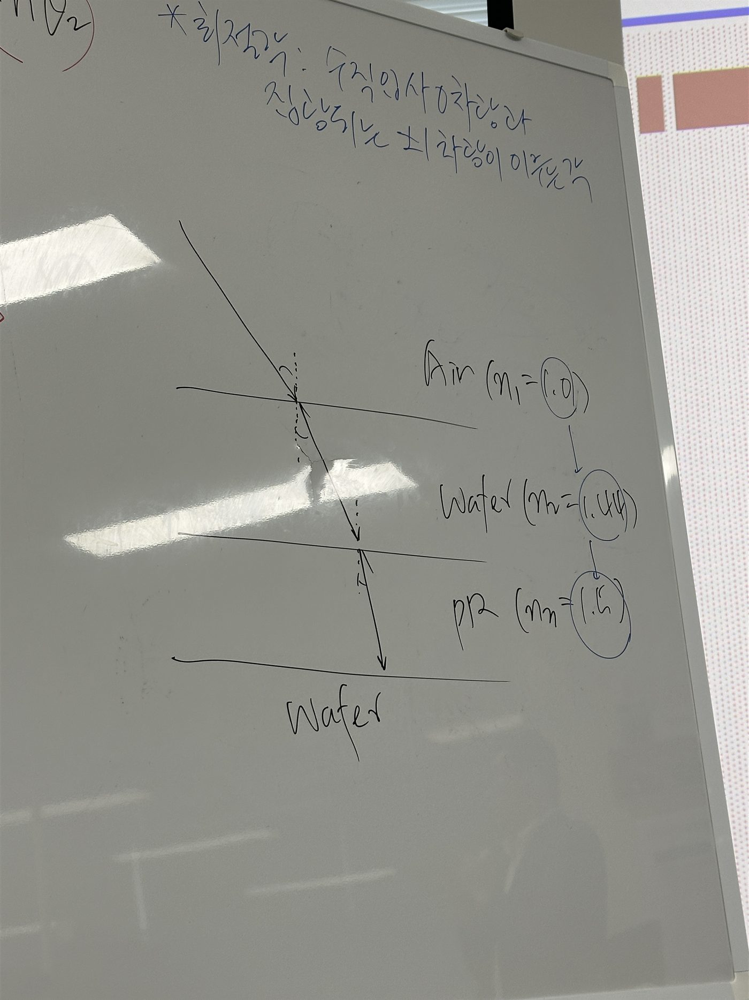
- 물이 특허 낸 물이라서 1.44를 갖는 것임. 원래 그냥 물은 1.33이다.
- 굴절상수가 작은 매질에서 큰 매질로 빛이 통과되게 해서 빛을 모아준다. (1.0 → 1.44 → 1.5)
– 굴절 상수가 크면 세타 값 자체는 줄어들기 때문이다. by 스넬의 법칙
2. Interference (간섭)
(1) 보강간섭: 동일 phase의 간섭 → 밝은 무늬
(2) 상쇄간섭: 반대 phase 간섭 → 어두운 무늬
- tanθ = sinθ 일때
- 두 빛의 경로차이는 BD가 되고, dsinθ로 정의된다.
단일 Slit을 통과할 때 0차광에서 Intensity가 가장 크다.
어두운 영역 밝은 영역이 생기는 것은 간섭 현상에 의해서 생기게 되는 것이다.
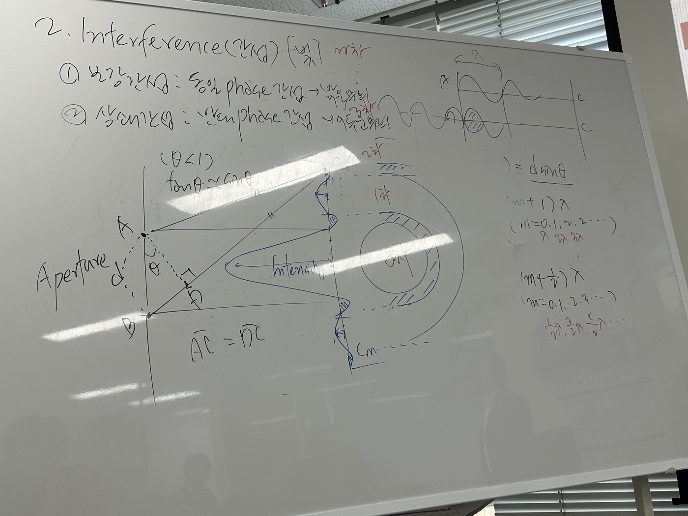
- 가운데에 가장 강한게 0차광이다. 그리고 나서 색칠된 부분은 어두운 부분이고 간섭 현상으로 인해 점차 약한 Intensity를 갖는 0 → 1 → 2 → 3 … 차광을 갖게 된다.
- 근데 여기에서 실질적으로 1차광을 논할 때 동그라미를 그려놓고 다 1차광이라고 할 수 없으니 오른쪽은 +1차광, 왼쪽은 -1차광이라고 한다.
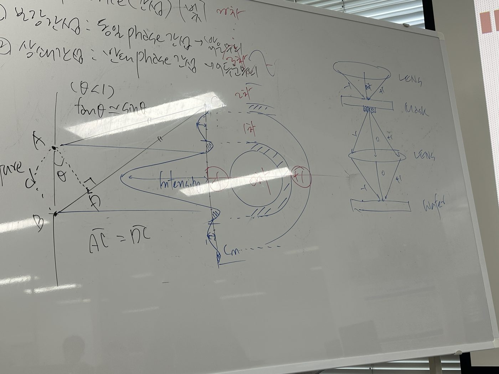
- 우측에 있는 그림을 보면 -1, 0, +1 차광을 사용하고 있다. 이걸 그래서 3-Beam Imaging이라고 하는 것이다. (0차광이 가장 강하고, +1,-1 차광이 그 다음이다)
- 맨 처음 렌즈는 Condensor 렌즈이고, 두번 째 Projection 렌즈라고 불린다. 단 그림과 이름이 렌즈라고 되어있어서 하나만 있는 것 같지만 실제로는 광학계이다. 렌즈가 여러개가 합쳐진 것이다.
- 광학계는 볼록-오목-볼록-오목….-어피처? 이런식으로 집광-분산-… 을 반복해서 우리가 원하는 -1, 0, 1차광만 투과 시켜서 포토 공정을 진행한다.
- 이렇게 광학계를 투과하게 되면 우리가 원하는 빛만 최종 집광시키려는 것이다. 다른 고차광들은 걸러내게 되는 것이다.
3. Diffraction(회절)
- 빛이 장애물 뒤로 되돌아가는 현상
Q. 왜 파장이 짧으면 해상도가 작은건데? 공식 말고 진짜 이유를 생각하고 답해봐라.
Light Source → Mask → Wafer
빛은 구면 파가 되어서 온다. 근데 거리가 충분히 멀면 평면파가 된다. 그러다가 다시 얇은 영역을 지나가면 구면파가 된다.
긴 파장일수록 되돌아가는 파장이 많고, 짧은 파장일수록 직진성이 높아진다. 여기에서 돌아가는 것을 Diffraction 현상이라고 한다. 화살표.
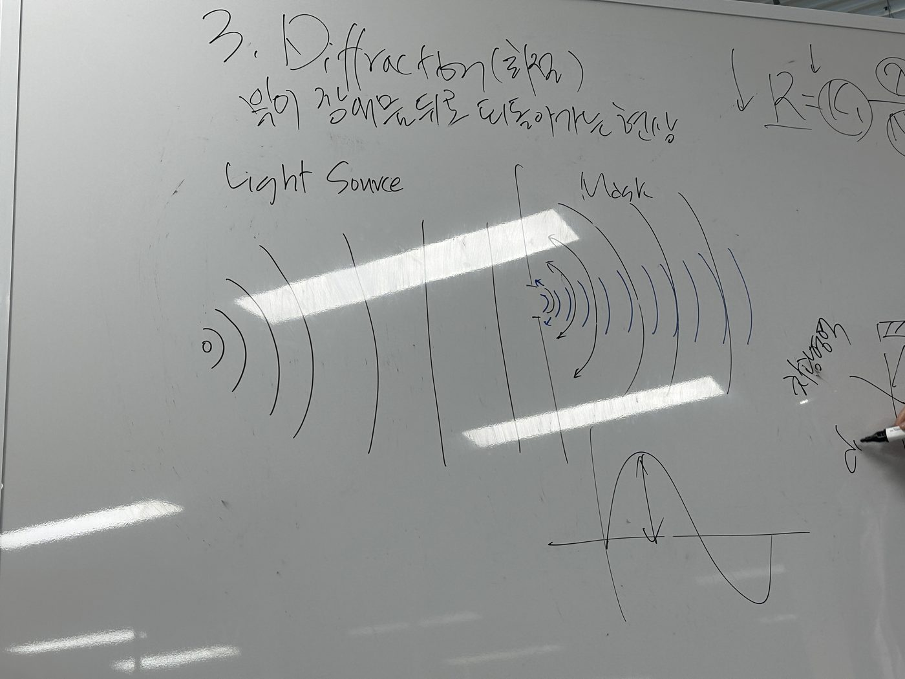
Intensity가 가장 센 빛이 0차 광이다. Mask를 지나가게 되면 mask를 지날 때 Intensity가 가장 세고 점차 작아지는 형태이다.
Diffraction 때문에 Mask 를 지나고 나서 사다리꼴 형태로 남게 되는 것이다. 이게 Diffraction 때문이라는 것이다.
그런데 긴 파장 대비 짧은 파장을 사용할 때 Diffraction이 최소화 되는 것이다.
그래서 파장이 짧을 수록 Diffraction이 최소화되고 그렇게 해상도가 좋아진다! 라고 말해야한다는 것이지 공식 자체가 의미를 갖는 것은 아니다.
그래서 PR Slope이 생긴 모양을 따라서 Positive Slope이라고 하는 것이다. 위에 오픈된 영역 > 아래가 오픈된 영역이다. 이것도 Diffraction에 의해서 생기는 것이다.
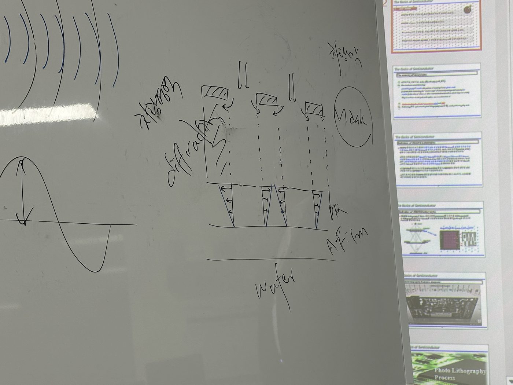
PR (Photoresist)
왜 긍정적이고, 왜 부정적인 PR인가? 이걸 나누는 것은 Polarity(극성)이다. Sensitizer가 감응제인데, 감응제가 빛과 직접 반응하면 Positive이고, 감응제가 촉매 역할을 하면 Negative이다. (여전히 왜 긍정이고 부정인지는 모르는거 아닌가?)
대상: “왜 긍정적이고, 왜 부정적인 PR인가? 이걸 나누는 것은 Polarity(극성)이다. Sensitizer…”
과거를 얘기하는 것이었다면 뭐 ok 아니라면 개소리
(1) Positive PR
- 빛을 받은 부분만 dissolution 되는 물질로 바뀌는 특성을 가진 PR
- 매질을 통과할 때 빛은 반사, 흡수, 투과가 된다.
- Si 위에 항상 PR이 바로 오지 않기 때문에 A-Film이라는 표현을 사용하시는 것이다. (시중에서는 그냥 Si나 Substrate라고 편의상 표기하는 것이다.)
- 시중에서는 직선으로 표현하니 Diffraction도 반영이 안된 것이다.
- High Resolution Resist
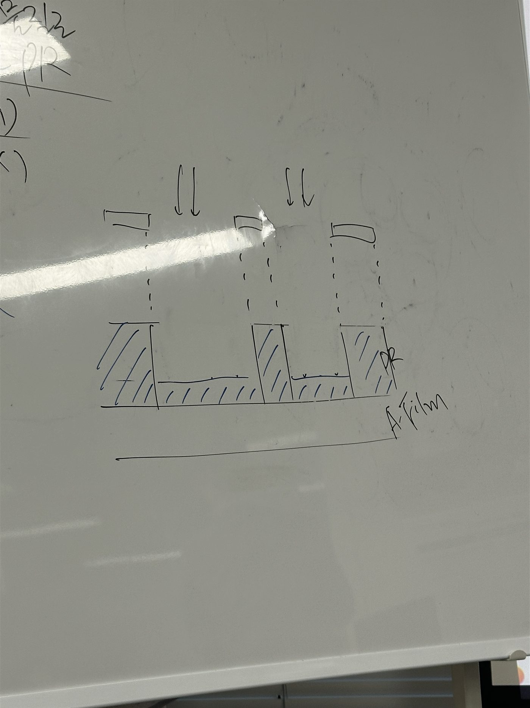
- 우리가 사용하는 광원의 PR은 PR과 하부 Layer 경계면까지 반드시 빛이 투과할 수 있게 하는 PR을 사용해야 한다. 그리고 해당 부분이 Dissolution 되는 물질로 바뀌어야 용해되는 것이다. 그러면 Dissolution 되는 물질로 바뀌지 않으면 빛을 받은 부분이 아니다.
- 그래서 PR mask로 사용하는 것은 Photo 공정에서 빛을 받지 않은 부분이다. (=Dissolution 되지 않는 부분이다.) 그래서 과거에는(Conventional) Hard mask를 통해 회로 패턴을 생성하고, Impurity를 주입한다.
→ 앞에서 배운 것을 통해
(2) Negative PR
- 구현할 수 있는 Resolution은 2~3μm 정도이다. 따라서 1μm 이하 선폭은 구현할 수 없다.
- Negative PR은 Swelling(팽윤) 현상을 일으키기 때문에 문제가 된다. 현상액이 PR 속으로 들어가서 팽윤하게 되어서 구현할 수 있는 해상도가 2~3μm으로 제한이 된다.
→ 이건 1990년대 까지 사용했다. (Conventional 공정 1970~1990 / Modification 공정 90년대 이후)
- 그럼에도 사용했던 이유는 열적 특성과 내화학성이 우수했다. Photo 공정 다음에 Dry etch 공정과 Ion implant 공정인데 Negative PR은 버텨주기 때문에 사용했다. 그래서 2~3μm라는 해상도의 한계가 있더라도 Positive PR을 사용할 수 없어서 사용했다.
Ref) Wet Etch는 80년대까지만 썼다. 그럼에도 Dry etch랑 비교해서 말하긴 하지. 그렇지만 과거에는 Wet etch가 등방성 식각에 의해 문제를 일으켜서 안쓴다. Conventional 과거에는 문제가 있으면 안썼다. 그래서 Negative PR도 사용하지 않는다.
면접 대비: Shift 근무는 체력이 문제가 아니라 멘탈의 문제이다.
- 체력이 좋습니다! 라고 하지말고, 편의점 야간 알바라던지, 종교도 좋다고 하신다. 1주일마다 교회에 가서 리프레쉬하고 옵니다! 이런 답변도 괜찮다는 거지. 멘탈을 잡을 수 있다고 말해라.
- 그리고 좋은 취미가 있으면 말해라.
- 이러한 종교, 취미를 통해서 교대 근무가 힘들겠지만 버텨낼 수 있을 것 같아 지원했습니다.
인성 질문이 들어올 때
- 보편성 + 합리성 을 생각해라.
- 취미 생활(독서, 영화, 런닝, 뜨개질, 독서…) 이런 것을 답하면 혼자만 하는 취미이다 보니 회사에 와서도 엉뚱한 사람일 수도 있다고 생각한다.
자소서에 활동을 했다라고 적었을 때 면접관들이 느끼는 감정
- 활동을 하더라도 거기에서 어떤 인사이트를 얻었는지 말할 수 있어야한다. 학습을 했는데 어쩌라고? 가 된다는 것이다. 면접관 입장에서는. 수료했다라고만 말하면 면접관들 입장에서는 소스만 던져놓고 자 너가 질문해. 라는 꼴이 된다는 것이다.
삼성전자 4번 항목을 다시 확인해봐라
- 지원한 직무와 관련한 내용이었는가? 습득한 전문지식 공부했는가?를 물어봤는데 그냥 캡스톤 디자인에서 잘한 것, 학부연구생 이런걸 쓰는데 그게 직무와 관련이 없다는 것이다.
- 그래서 이 4번 경험을 통해서 주장하고 싶은게 뭔데?를 점검해봐라.
- 전문지식을 어필해라 근데 그냥 공부한게 아니고 깊이, 그리고 함께 스터디 했어. → 그리고 이걸 공부해서 “하고 싶은 일” 을 하려고 공부한거지. 그게 지원한 직무에 본인이 적합한 사유가 되어야하는 것이다.
- ex) EUV를 사용하지 않고서도 Resolution을 좋게 만들고 싶어서 지원했습니다.
- 그래서 내가 공부한걸 다 집어넣을 수는 없으니까 공정 중 1/8만 집어넣어라
- 가독성을 확보하려면 35~50자 정도로 작성하는게 좋다.
공감대 형성 = 객관화
- 지원자가 하는 얘기를 듣고 다른 생각을 하지 않게 하는 것이다.
11. 질문
전기전도도와 비저항은 물질의 고유한 값이 맞다. 그렇지만 단일 값은 아니다. 그 이유는 Si의 경우 도핑을 하면 값 자체는 변할 수 있으니까. 그래서 컨트롤 한다고 이해하면 되는 것인가?